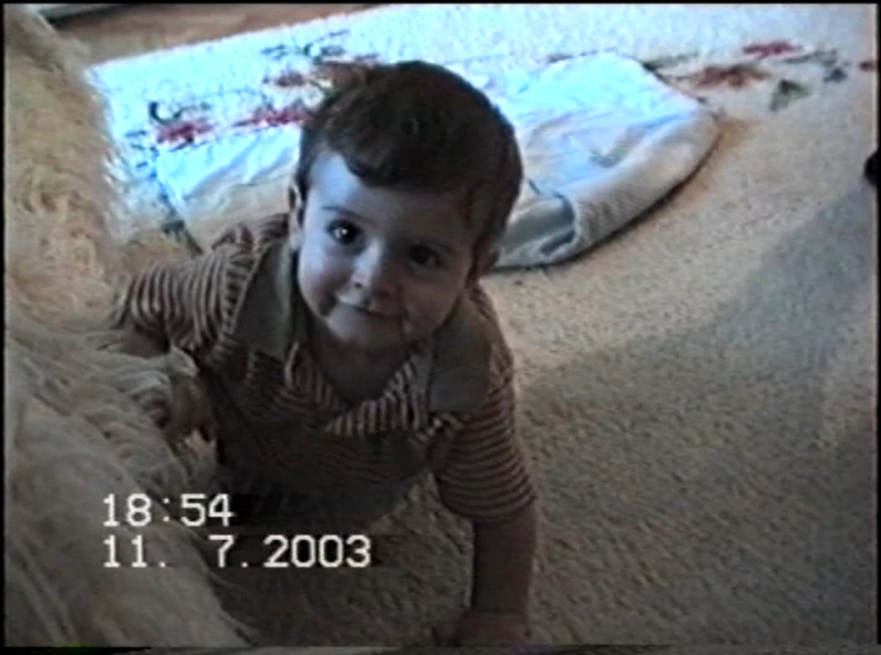
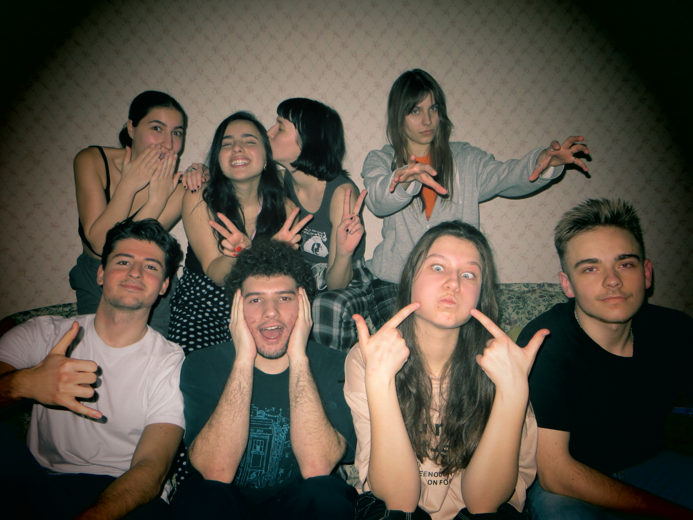

I was born and raised in Skopje, North Macedonia, a city filled with youth and talent. I later on moved to Tacoma, WA, for a year during high school before coming to LCC International University. Although I only recently started taking photography seriously, it has always been a part of my life. From having every memory of my childhood documented by my parents' photographs to being the designated picture-taker when I hang out with my friends.
My background


The university experience that has shaped me the most by far is being in Student Council. This group of motivated and talented students has taught me so much about leadership, structure, work ethic, and creativity; skills that are helpful in any area of life and work. Being student representatives means that we constantly hear about creative ideas, initiatives, and projects coming from our peers on campus.